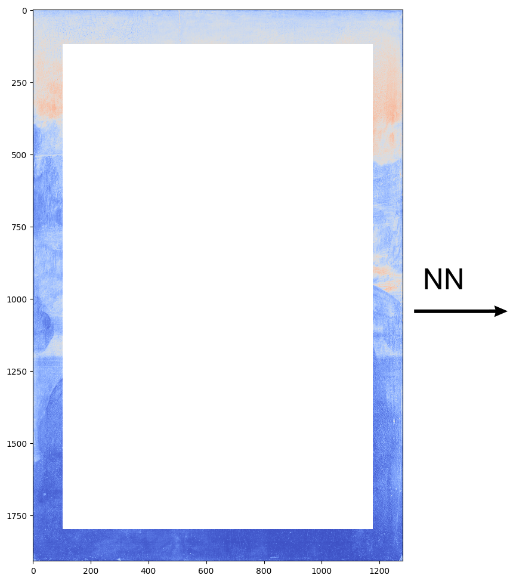
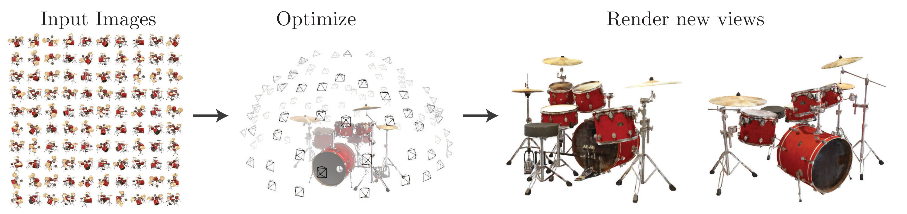
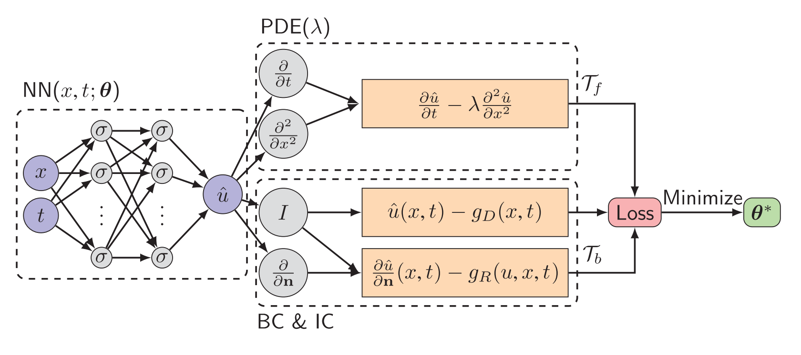
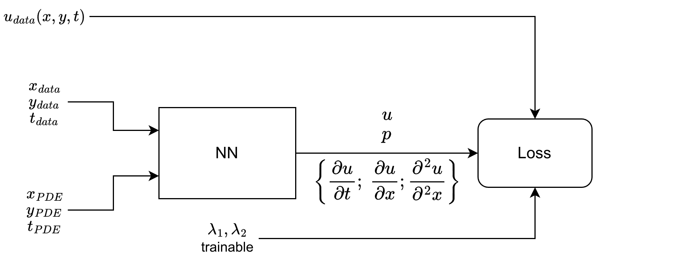
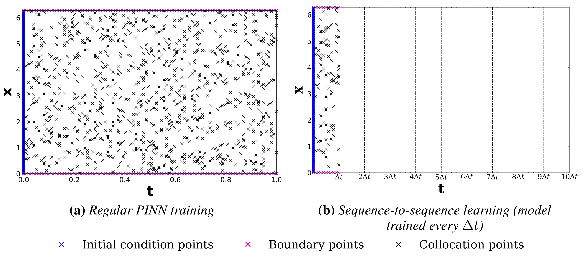

name: discretefourier class: center,middle, .toc[[✧](../index.html)] .title[PINN] <br/> .subtitle[Physics Informed Neural Networks] <br/><br/> <!-- .author[Grzegorz Gruszczyński] .institution[IDEAS NCBR, CYFRONET] --> .coauthor[Grzegorz Gruszczyński<sup>1,2</sup> M. Bukowicki<sup>1</sup> Sz. Nowakowski<sup>1</sup>] <br/> .institution[<sup>1</sup>University of Warsaw <sup>2</sup>IDEAS NCBR] <!-- <textarea id="source"> class: center,middle, .toc[[✧](../index.html)] <br/><br/><br/><br/> .title[Scientific ML] .subtitle[Introduction] <br/><br/> .author[Grzegorz Gruszczyński] .institution[IDEAS NCBR, CYFRONET] <br/> <!-- .coauthor[Sherlock S. Holmes<sup>1</sup>, John H. Watson<sup>2</sup>] .institution[<sup>1</sup>Baker Street Research, <sup>2</sup>Edinburgh University] --> <br/><br/> .date[December, 2023] <br/><br/><br/> .note[Created with [{Liminal}](https://github.com/jonathanlilly/liminal) using [{Remark.js}](http://remarkjs.com/) + [{Markdown}](https://github.com/adam-p/markdown-here/wiki/Markdown-Cheatsheet) + [{KaTeX}](https://katex.org)] --- class: left, .toc[[✧](../index.html)] # Thanks to .left-column[ <img style="width:250px" src="../logos/logo-uw.png"> <br/> <br/> <img style="width:250px" src="../logos/IDEAS_logo.png"> <br/> <br/> ] .right-column[ <a href="https://granty.icm.edu.pl" style="font-size: 20px;" target="_blank">GPU wait4you - granty.icm.edu.pl</a> ] --- name: toc class: left, .toc[[✧](../index.html)] # Table of Contents 1. [Introduction](#WhyGPU) 1. [What are PINNs](#GPU_memory_model) 1. [Example](#SampleCode) 1. [PINN pros and cons](#GPU_programming_model) 1. [Questions](#questions) --- class: left, .toc[[✧](../index.html)] # Physics vs Data --- class: left, .toc[[✧](../index.html)] # Why inject physics to ML? -- * Inductive bias: architecture behind Fourier/Laplace neural operator; equivariant neural nets. -- * Learning bias: physics informed loss (PINN, PINO). -- * Observational bias: discover the governing equation (SINDy). -- [Link.](https://www.nature.com/articles/s42254-021-00314-5) --- class: left, .toc[[✧](../index.html)] # PINN explosion [Source.](https://link.springer.com/article/10.1007/s10915-022-01939-z) --- class: left, .toc[[✧](../index.html)] # What can we do with PINNs? **Inference, smoothing** *1a. Solutions of PDEs*: Knowing `$\gamma$` find `$u(t, \mathbf{x}) $`. *1b. Data-efficient* spatio-temporal function approximators - instead of classical file compression ;) *1c. Accurate RK time steppers* with maaany stages (~100). -- <br> **System identification, learning coefficients** *2. Data-driven discovery of PDEs solutions*: Find `$\gamma$` that best describes experimental observations `$u (t^i, x^i)$` --- class: left, .toc[[✧](../index.html)] # How to think about PINNs? Think of painting the image... .left-column[] .right-column[] -- .left-column[] .right-column[] ...knowing the relationship (PDE) between the pixels. --- class: left, .toc[[✧](../index.html)] # How to think about PINNs? Learning a scene (3D).  [Fig source.](https://arxiv.org/abs/2003.08934) -- <br> In case of PINNs we **know** the PDE which governs the relationship between data (pixels). Similarly to learning a single instance of an image/scene, we learn an instance of PDE solution (with given parameters, BC, etc). <!-- --- class: left, .toc[[✧](../index.html)] # How to think about PINN? PINN can be viewed as method for learnig an image (2D) or a scene (3D). --> --- class: left, .toc[[✧](../index.html)] # PINN - the differential constraint Consider a loss function containing a differential equation: -- This explains why PINNs fit better than naive NN. However, you may expected the solution to drift far from the data points. --- class: left, .toc[[✧](../index.html)] # Normal NN <div align='center'> </div> --- class: left, .toc[[✧](../index.html)] # PINN <br><br><br><br> <div align='center'> </div> --- class: left, .toc[[✧](../index.html)] # PINN + data <div align='center'> </div> --- class: left, .toc[[✧](../index.html)] # What kind of math do we want to solve? Consider a nonlinear differential operator denoted as `$\mathcal{O}=[\partial_t, \nabla_{\boldsymbol x}, \nabla^2_{\boldsymbol x}, ... ; \gamma]$` with some parameters `$\gamma$` related to the given physics. `\begin{equation} \begin{aligned} \mathcal{O}(\boldsymbol{u}(t,\boldsymbol{x}) ; \gamma) & = f(\boldsymbol{u}(t,\boldsymbol{x})) & & \boldsymbol{x} \text { in } \Omega, & & t \in [0, T] \\ \mathcal{O_B}(\boldsymbol{u}(t,\boldsymbol{x}) & = f_B(\boldsymbol{u}(t,\boldsymbol{x})) & & \boldsymbol{x} \text { in } \partial \Omega, & & t \in [0, T] \label{pinn_eq} \end{aligned} \end{equation}` The spatial and temporal coordinates are `$\boldsymbol x $` and `$t$`. The `$\mathcal{O_B} $` operator is related to boundary and initial conditions. <!-- The **unknown solution** is represented by `$\boldsymbol u$`. --> --- class: left, .toc[[✧](../index.html)] # Solving PDEs with PINN 1) Rewrite your PDE as `$\mathcal{O}(u) = 0 $`, where `$u=u(t, x) $`. <br> \begin{aligned} \frac{\partial u}{\partial t} - \lambda \frac{\partial ^2 u}{\partial x^2} =0\\ \end{aligned} <!-- Taking Navier-Stokes as example: ` \begin{aligned} & \frac{\partial \rho}{\partial t} + \nabla \cdot \rho \mathbf{u}=0\\ & \rho \bigg( \frac{\partial \mathbf{u}}{\partial t}+ \mathbf{u} \cdot \nabla \mathbf{u} \bigg) + \nabla p - \nabla \cdot ( \mu [\nabla \mathbf{u} + (\nabla \mathbf{u})^T ) = \mathbf{0} \end{aligned} ` --> -- 2) The solution, `$ u $`, is approximated by NN: `$ \hat{u}(t,x) = \mathcal{NN}(t,x) $` -- 3) Express the NN loss as `$\mathcal{L} = \mathcal{L}_{IC;BC} + \mathcal{L}_{PDE} $` ` \begin{aligned} \mathcal{L}_{IC;BC}=\frac{1}{N_B} = \sum_{i=1}^{N_B}\left| \hat{u}\left(t_B^i, x_B^i\right)-u^i_{data}\right|^2 \\ \mathcal{L}_{PDE}=\frac{1}{N_f} \sum_{i=1}^{N_f}\left| \mathcal{O} \bigg( \hat{u} \left(t_f^i, x_f^i\right) \bigg)\right|^2 \end{aligned} ` -- - `$\mathcal{L}_{IC;BC} $` enforces initial and boundary data accuracy: `$ \hat{u} \approx u $`, - `$\mathcal{L}_{PDE} $` imposes the PDE into the loss function: `$\mathcal{O}(\hat{u}) \approx \mathcal{O}(u) = 0 $` --- class: left, .toc[[✧](../index.html)] # Solving PDEs with PINN Heat equation: `$ \frac{\partial u}{\partial t} - \lambda \frac{\partial ^2 u}{\partial x^2} = 0 $` ### Algorithm: - Initilize the NN - For n iterations: 1. Sample collocation points `$ {( t_f^i, x_f^i )} $` 2. Compute the derivatives `$ \frac{\partial u}{\partial t} $` and `$ \frac{\partial ^2 u}{\partial x^2} $` 3. Minimize `$ || \frac{\partial u}{\partial t} - \lambda \frac{\partial ^2 u}{\partial x^2} || $` --- class: left, .toc[[✧](../index.html)] # Architecture zoom  -- ```.py u = neural_net(torch.hstack((x, y, t))) u_t = torch.autograd.grad(u, t, grad_outputs=torch.ones_like(u), create_graph=True) u_x = torch.autograd.grad(u, x, grad_outputs=torch.ones_like(u), create_graph=True) u_xx = torch.autograd.grad(u_x, x, grad_outputs=torch.ones_like(u_x), create_graph=True) loss_pde = u_t - diffusivity * (u_xx) ``` <small> [Img source](https://arxiv.org/abs/1907.04502) | [Original PINN paper](https://www.sciencedirect.com/science/article/pii/S0021999118307125) | <a href="https://github.com/maziarraissi/PINNs/blob/0542794b0a91b9e8764a38f5fc9cd9647a3929ba/appendix/continuous_time_inference%20(Burgers)/Burgers.py#L91">Original implementation.</a> </small> <!-- <img style="width:100%" src="../figures/pinn_architecture.png"> Source: "Physics-informed deep learning for incompressible laminar flows", Chengping R. et al, 2020 --> --- class: left, .toc[[✧](../index.html)] # PINN - parameter identification <div align='center'> </div> --- class: left, .toc[[✧](../index.html)] # PINN - parameter identification v2 <div align='center'>  </div> --- class: left, .toc[[✧](../index.html)] # PINN for parameter discovery in PDE Consider Navier-Stokes Equations with unknown coefficients `$ \lambda_1, \lambda_2 $` `\[ \begin{cases} \frac{\partial \mathbf{u}}{\partial t} + \lambda_1 \mathbf{u} \cdot \nabla \mathbf{u} = - \nabla p - \lambda_2 \nabla \cdot ( [\nabla \mathbf{u} + (\nabla \mathbf{u})^T ) = \mathbf{0} \\ \nabla \cdot \mathbf{u} = 0 \end{cases} \]` <!-- & u_x + u_y =0 \rightarrow u_x = \psi_y, u_y = -\psi_x \\ --> <!-- & \frac{\partial \rho}{\partial t} + \nabla \cdot \rho \mathbf{u}=0\\ --> -- Given a set of velocity observations `$ \mathbf{u} $`, <br> learn `$ \lambda_1, \lambda_2 $`, and the pressure field, p, <br> using a simple NN with two outputs. --- class: left, .toc[[✧](../index.html)] # PINN for parameter discovery in PDE Locations of training data-points for the velocity field. <br> <small><small><small> [Source: Original PINN paper](https://www.sciencedirect.com/science/article/pii/S0021999118307125). <!-- Source: "Physics-informed neural networks: A deep learning framework for solving forward and inverse problems involving nonlinear partial differential equations" M. Raissi, P. Perdikaris, G.E. Karniadakis, 2018 --> </small></small></small> --- class: left, .toc[[✧](../index.html)] # PINN for parameter discovery in PDE Suprisingly, the NN predicted the entire pressure field (up to a constant) without any pressure data! <!-- <small><small><small> Source: "Physics-informed neural networks: A deep learning framework for solving forward and inverse problems involving nonlinear partial differential equations" M. Raissi, P. Perdikaris, G.E. Karniadakis, 2018 </small></small></small> --> --- class: left, .toc[[✧](../index.html)] # PINN - advantages * Approximation of solution function with **physical constraints**. * The use of governing equations **eliminates** the tremendous need for of **training data**! --- class: left, .toc[[✧](../index.html)] # PINN - features * Traditional methods solve the zero-residual conditions, PINN relies on searching the minimal residuals (weak constraint). -- * Traditional methods use numerical differentiation, PINN use Automatic Differentiation (AD). --- class: left, .toc[[✧](../index.html)] # PINN - drawbacks Despite of general success, PINNs are known to suffer from: <small> * spectral bias - [link](https://openreview.net/forum?id=shUbBca03f). <!-- \cite{Steger2022HowPendulum}, --> </small> -- <small> * regularization and optimization difficulties - [link1](https://arxiv.org/abs/2109.01050), [link2](https://arxiv.org/abs/2111.02801). <!-- \cite{KrishnapriyanCharacterizingNetworks,Yu2022Gradient-enhancedProblems}. --> </small> -- <small> * can only learn the solution function for a specific instance of a PDE. </small> -- <small> * The solution may drift far from boundaries (you may need data points within the domain). </small> -- <small> * can only learn solutions tied to specific discretization. <!-- TO BE CONFIRMED --> </small> -- <small> * they cannot learn the general mapping between the input functions and the output solution functions. </small> -- <small> * AD performance issues: The first-order derivatives require one back-propagation on the network, while the second-order derivatives present in the diffusion term `$ \nabla^2 $` require an additional back-propagation on the first-order derivatives' computational graph - [link](https://arxiv.org/abs/2205.14249). </small> --- class: left, .toc[[✧](../index.html)] # PINN - failure modes Hyperbolic PDE: information have a finite propagation speed. Advection equation: `\[ \frac{\partial u}{\partial t} + \beta \frac{\partial u}{\partial x} = 0 \\ \]` <br> .left-column[ ] -- .right-column[ ```.py # also known as roll ;-) x = np.arange(10) x array([0, 1, 2, 3, 4, 5, 6, 7, 8, 9]) np.roll(x, 2) array([8, 9, 0, 1, 2, 3, 4, 5, 6, 7]) ``` ] --- class: left, .toc[[✧](../index.html)] # PINN - failure modes Source: [slides](https://amirgholami.org/assets/talks/2021_10_22_Rethinking_PINNs.pdf), [talk](https://www.youtube.com/watch?v=qYmkUXH7TCY&t=2281s&ab_channel=AmirGholaminejad). --- class: left, .toc[[✧](../index.html)] # PINN - failure modes <br><br><br><br> [Source](https://openreview.net/pdf?id=a2Gr9gNFD-J). --- class: left, .toc[[✧](../index.html)] # PINN - failure modes - curritulum training Solution: <br><br><br><br><br> [Source](https://openreview.net/pdf?id=a2Gr9gNFD-J). --- class: left, .toc[[✧](../index.html)] # PINN - failure modes - diagnosis **Investigation:** -- **Diagnosis:** The NN has enough capacity (neurons) to learn, but the loss function with PDE regularization is not smooth. <br><br> [Source](https://openreview.net/pdf?id=a2Gr9gNFD-J). --- class: left, .toc[[✧](../index.html)] # PINN - learning enhancement Another advise ([source](https://openreview.net/pdf?id=a2Gr9gNFD-J)): "Don't try to learn entire space-time simultaneously."  --- class: left, .toc[[✧](../index.html)] # PINN - learning enhancement Think of painting the image... ... knowing the relationship (PDE) between the pixels. --- class: left, .toc[[✧](../index.html)] # gPINN - learning enhancement **Example** Poisson equation: <br> `$ PDE: \frac{\partial^2 u}{\partial x^2} - f = 0$` <br> Loss function for PINN: <br> `$\mathcal{L}_1 = \big| \frac{\partial^2 u}{\partial x^2} - f \big|^2 $` -- <br> Additional Loss function for gradient-enhanced PINN ([link](https://www.sciencedirect.com/science/article/abs/pii/S0045782522001438)). `$\mathcal{L}_2 = \big| \nabla PDE \big| = \big| \frac{\partial^3 u}{\partial x^3} - \frac{\partial f}{\partial x} \big|^2 $` `$\mathcal{L}_{total} = \mathcal{L}_1 + \mathcal{L}_2 $` --- class: left, .toc[[✧](../index.html)] # How to compare PINN with traditional solvers? It is an open question ([link](https://arxiv.org/abs/2205.14249)). Consider AI workloads: - 100 model parameters plus 100 training points - vs 150 model parameters plus 50 training points -- The traditional solvers: - Residuals of the numerical solvers measure the exact error. - Order of convergence of numerical method can be derived analitycally / proved numerically. --- class: left, .toc[[✧](../index.html)] # PINN training - convergence - SGD optimizer: first order convergence - Newton-like methods e.g. BFGS or LBFGS: second order approximations of the Hessian matrix, thus they are (quasi) second order. <!-- https://towardsdatascience.com/bfgs-in-a-nutshell-an-introduction-to-quasi-newton-methods-21b0e13ee504 https://en.wikipedia.org/wiki/Quasi-Newton_method --> --- class: left, .toc[[✧](../index.html)] # Packages <small> - <https://github.com/pnnl/neuromancer> - <https://github.com/lululxvi/deepxde> - <https://github.com/boschresearch/torchphysics> - <https://github.com/NVIDIA/modulus-sym> - <https://github.com/sciann/sciann> </small> <img style="width: 80%" src="../figures/star_history.png"> --- class: left, .toc[[✧](../index.html)] # References Nice tutorials: - <https://uvadlc-notebooks.readthedocs.io/en/latest/> --- class: left, .toc[[✧](../index.html)] # Join us Fascinated? You can join us for a MSc / PhD. Contact: grzegorz.gruszczynski [Unicode Character U+0040](https://www.compart.com/en/unicode/U+0040) ideas-ncbr.pl --- class: left, .toc[[✧](../index.html)] # Questions? <!-- <center> This text will be centered. <p>So will this paragraph.</p> </center> --> <!-- 1. Sketch `$u=\cos(\omega t)$` and `$v=\sin(\omega t)$`. Also sketch `$u$` vs. `$v$` with `$u$` along the x-axis and `$v$` along the y-axis. 2. Do the same but for `$u=\cos(\omega t)$` and `$v=\cos(\omega t)$`. 2. Do the same but for `$u=\cos(\omega t)$` and `$v=2\cos(\omega t)$`. 3. Do the same but for `$u=\cos(\omega t)$` and `$v=0$`. -->